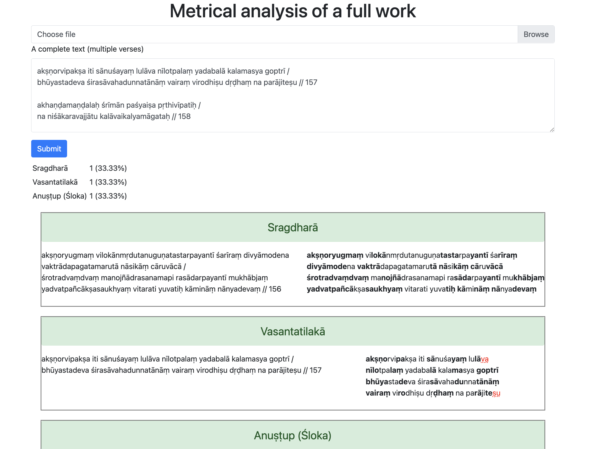
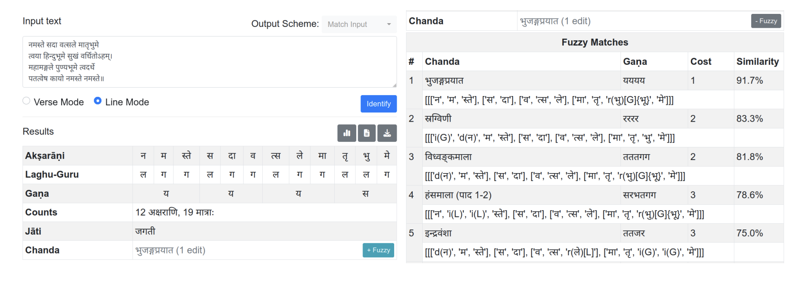
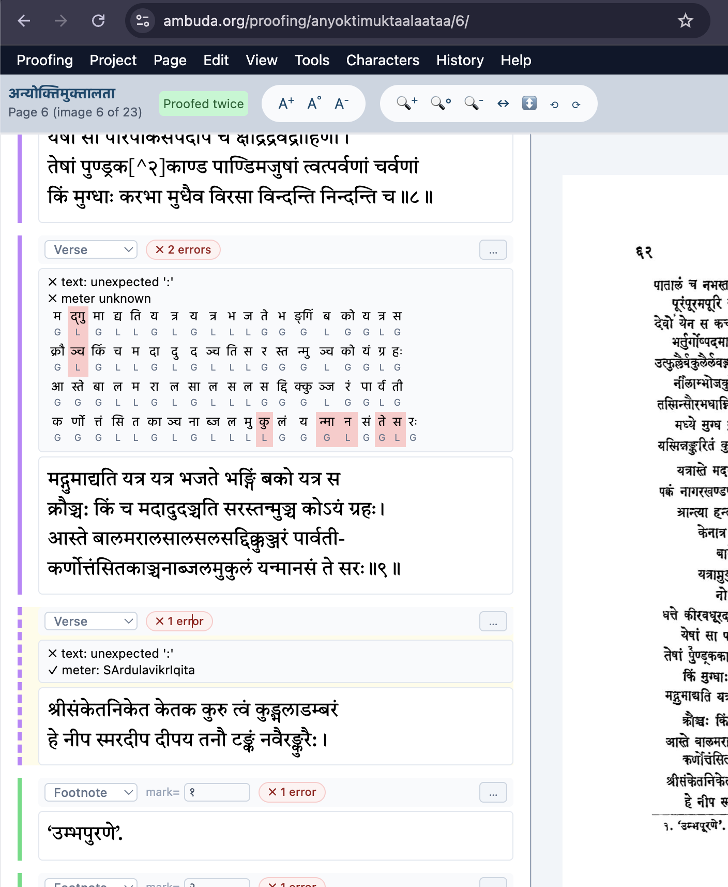
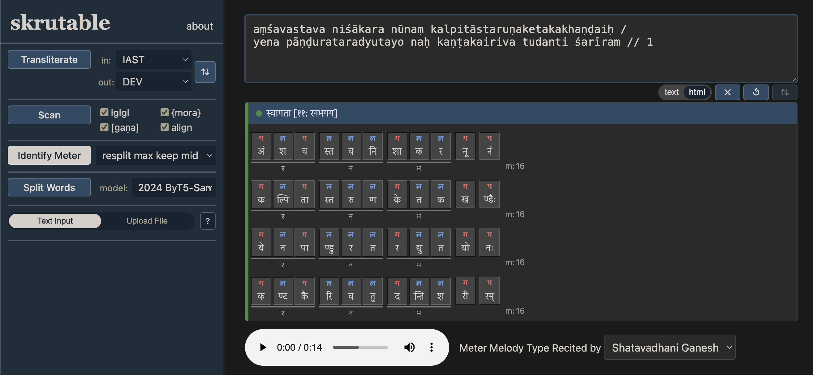
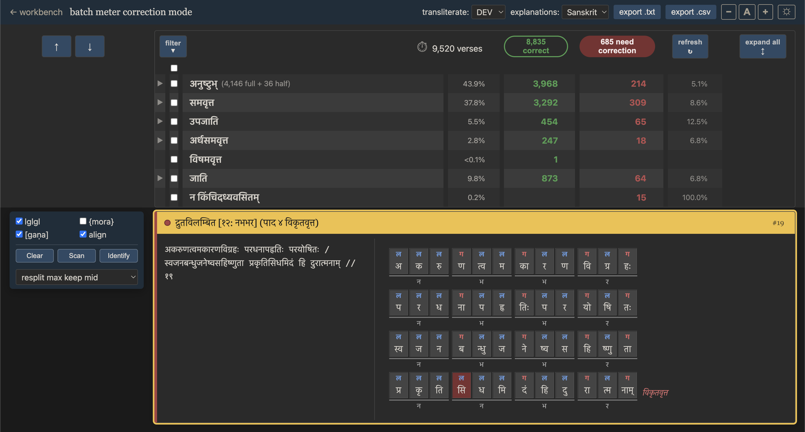
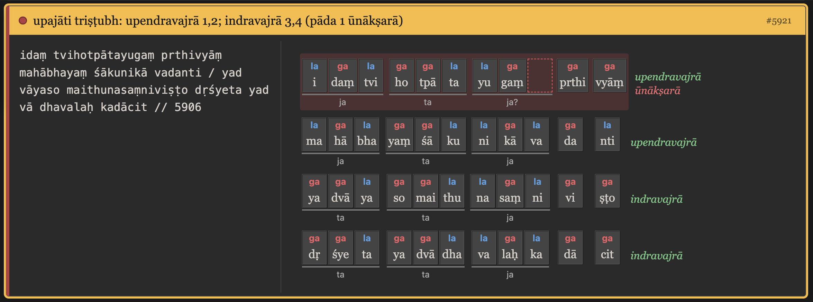
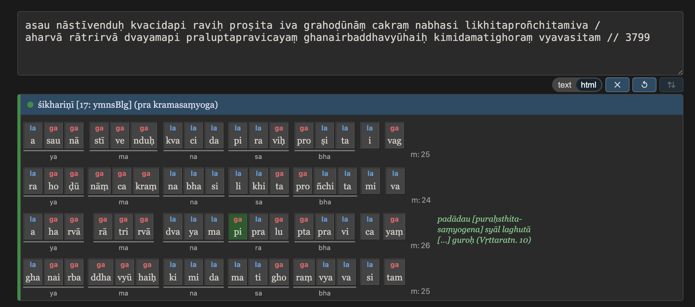
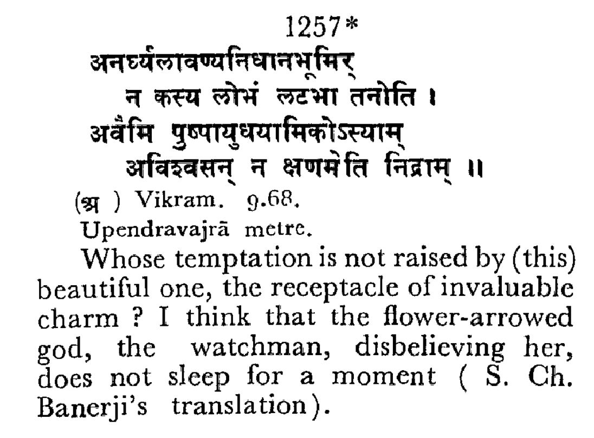

Background
If you've used Skrutable's meter detection, perhaps even in its batch or "whole-file" mode, you'll know it has left lots to be desired in recent years:
- Confusing outputs talking about vague "asamīcīna" or "ajñāta" elements or "atha vā" alternatives.
- No good visual clues beyond concise plain-text scansion output.
- Annoying restrictions on input, such as one-verse-per-line file upload and no three-pāda anuṣṭubh.
- Glaring shortcomings in identification of moraic meters (e.g., āryā).
In 2023, the peer project Chandojñānam (down at the time of writing; see Wayback for a non-functioning snapshot) by Hrishikesh Terdalkar and Arnab Bhattacharya leveled interesting challenges at Skrutable, referencing its own extra abilities in identification (e.g., imperfect ardhasamavṛtta), input (image-OCR with Google Drive), and output (tabular HTML, also for several verses). In my own write-up at the same conference, I focused my own comparative thinking on Shreevatsa Rajagopalan's 2018 write-up of his Metre Identifier tool and the 2015 write-up of the Meter Identifying Tool by Keshav Melnad, Pawan Goyal, and Peter Scharf. In the years since, I've tinkered with various aspects of Skrutable, and I periodically looked at Hrishikesh's and Shreevatsa's tools, including the latter's hidden "fulltext" mode (see screenshot below), and mulled over how to make Skrutable's meter functionality better. Recently, Arun Prasad also did a similar sort of HTML-output meter identification as part of his text verification pipeline for Ambuda.



Given my new 2026 AI superpowers with Claude, I figured it was time to give Skrutable the upgrade it deserved.
Some Big Updates
I'm happy to report that Skrutable's meter identification capabilities have taken a huge leap forward. I've addressed basically all major aspects that I thought needed help. It is now clearer, more accurate, faster, and more fun to use, also at scale.

Specifically, it can now:
- identify many new types of imperfect verses, including even moraic verses;
- give clear feedback pinpointing the location and nature of imperfections within the verse (e.g., missing or extra syllables, or pattern violations) to help improve the text;
- explain subtle rules and subrules in real time as they become relevant for a given verse, citing practical authorities in both Sanskrit and English;
- present output in various transliteration schemes;
- accept multi-verse input in naturally messy forms, in the main-screen input box.
Most exciting of all, it offers an elaborate, video game-like graphical interface to browse all the verses of a text, analyze its verse types and subtypes, and work through correcting its textual problems.
To start, first enable the new mode on the Settings page. Then, you just copy-paste your multi-verse text into the standard input box, ensure proper settings — note that Skrutable can now auto-transliterate if needed, and it will also remember your preferred output scheme and other settings from previous sessions — and click Identify. Thanks to new under-the-hood speedups (bugfixes, parallelization, etc.), even large texts are completely analyzed in a few seconds.
You're then taken to batch meter correction mode. Here, the focus is on incorrect verses, but you can also toggle open correct ones as needed. Scroll or use the up/down buttons to browse the verses in question. The Filter dropdown offers a comprehensive breakdown by type which you can use to better focus your attention.

When you click on a given verse, the toolbox on the left snaps into place, and you can use its tools and edit the verse text until you hopefully converge on a solution. Stats above on how many verses are still incorrect and how many of each type have been found update accordingly with the interface's Refresh button. You can then export the result.
As mentioned, accuracy and detail are also better than before. For example, you get pāda-by-pāda breakdown of various kinds of upajātis, even imperfect and less common ones. Moraic meters also now have some error tolerance, and for both moraic and anuṣṭubh meters, gaṇa groupings relevant to the meter type are shown. Skrutable now even knows the "krama-saṃyoga" poetic license that allows for optionally counting a word-initial br or kr (for example) as a simple consonant when it helps the meter (see discussion here on the Issues page of the GitHub repo for Shreevatsa's tool).


Now that the system is so much more powerful and fun to use, I'm really looking forward to using it for my own corpus-building work (HANSEL and Muktabodha). I hope it'll be useful to you, too! I'll post a demo video if/when I make one, but meanwhile, go ahead and grab some text to try it out yourself.
Next: Measuring Performance with the Mahāsubhāṣitasaṃgraha
Apart from a few dozen small bugfixes and new features still on the backlog — exporting should have more options, and it should also be possible to save progress and continue later, without exporting, for one example — the last big task remaining in this phase of development is to establish, in a rigorous and reproducible way, how well Skrutable's meter identification performs against a real benchmark. For that purpose, I've chosen Ludwig Sternbach's Mahāsubhāṣitasaṃgraha, from which all the examples above have been drawn. This multi-volume publication contains a wide range of meter types, including numerous unusual and defective specimens, making it an ideal test corpus. The resulting benchmark dataset would consist of (1) a unique verse identifier, (2) the verse text, and (3) a meter-identification annotation, including any known imperfections in the printed text. Once assembled, it will be usable not only for Skrutable but for any Sanskrit meter-identification tool. But building the benchmark is a substantial project in its own right. I'd like to finish today's post by talking in detail about this data side of things, without which the software development would not be possible.
As background, it's worth noting that the Saṃgraha itself is an incomplete and ongoing project, proceeding alphabetically and drawing on what appears to be a vast backlog of Sternbach's notes. There is no complete e-text. The first volume appeared in 1974 and covered अ–अन्वे. Four volumes were published before Sternbach's death in 1981, a fact discussed in the foreword to volume 5 (reaching का). These first five volumes were later digitized by unknown parties and eventually became the basis of the GRETIL e-text, which remains the most comprehensive digital version available today. Volumes 6–8 (कि–छे) have also been available online for some time, e.g. here on the Internet Archive. Most recently, volume 9 (ज–त) appeared in 2021. I have a hard copy on loan from UPenn and plan to create a PDF version. It is remarkable that the team at the Vishveshvaranand Vedic Research Institute in Hoshiarpur has continued bringing the project forward for more than four decades after Sternbach's passing, though there is clearly still a long way to go before reaching the end of the alphabet.
So, challenge #1: Given those gaps in even rough starting data, and due to the fact the existing digital text covering volumes 1–5 contains many errors, I'm effectively starting by re-digitizing all nine volumes, although the existing e-text provides a significant head start for the earlier volumes. Challenge #2: The printed editions themselves contain numerous mistakes, which I'll likely want to maintain in one project data layer as a way of making the benchmark more spicy and interesting. Challenge #3: Beyond digitizing the text, I want to utilize the metrical annotations supplied by the editors. Except in the case of anuṣṭubh, a meter label is typically given after each verse.

Unfortunately, these labels are not always correct. Each volume also contains an "Index of Meters" grouping verses by meter type, but these indexes contain independent errors of their own and cannot be accepted uncritically.
There is yet another complication. In some cases, what Skrutable identifies as genuine metrical irregularities are not acknowledged in the printed edition at all, presumably because they are subtle enough to have escaped notice. At present, Skrutable appears accurate enough to serve as a useful source of hypotheses and a valuable cross-check against the editorial annotations. I am aware of the potential circularity involved in using a meter-identification system to help construct a benchmark against which meter-identification systems will later be evaluated. But where else will the ground truth come from? In practice, then, establishing these meter annotations will require corroborating the Saṃgraha against itself, against Skrutable, and against the best philological judgment I can bring to bear — hopefully with assistance from others as the project progresses.
The finished dataset, together with the complete e-text, will be released on HANSEL and should provide a valuable resource for future work on Sanskrit metrical analysis. More on that soon.